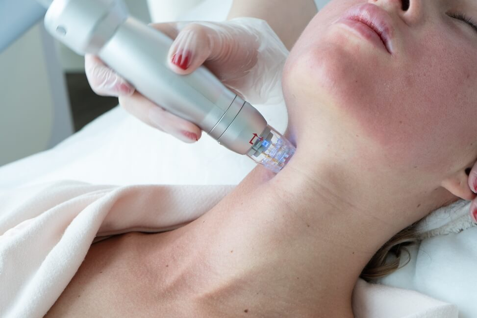
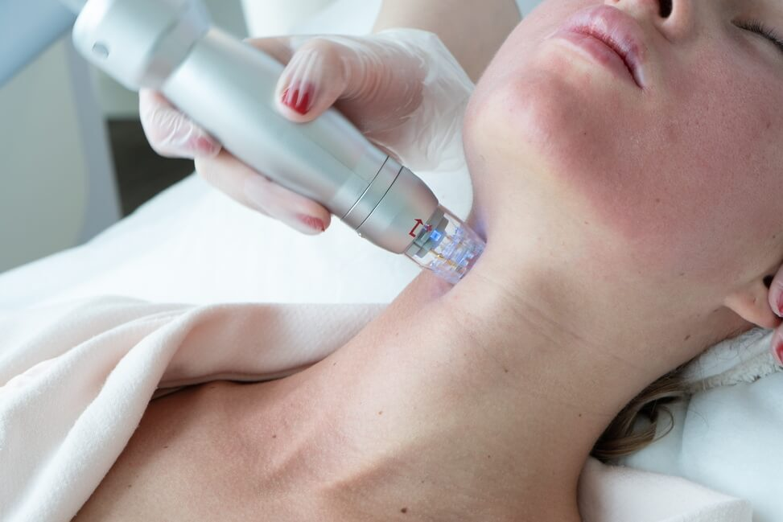

Микроигольчатый RF-лифтинг — это аппаратная методика, сочетающая радиочастотное воздействие и фракционную технологию.
Аппарат проникает в глубокие слои кожи, стимулируя естественные процессы омоложения.
Большое внимание наша компания уделает помощи и благотворительности нуждающимся.
Мы являемся партнерами группы помощи My animal.
Каждый Новый год и другие праздники наша команда участвует в помощи сбора подарков для домов престарелых и детских домов.
Так же мы всегда готовы принять участие в beauty поддержке в хосписах и других особенных местах.
Микроигольчатый RF-лифтинг — это аппаратная методика, сочетающая радиочастотное воздействие и фракционную технологию.
Аппарат проникает в глубокие слои кожи, стимулируя естественные процессы омоложения.
Что вы узнаете на приёме косметолога?
Если у вас есть вопросы, предложения или вы хотите обсудить проект, пожалуйста, свяжитесь с нами.